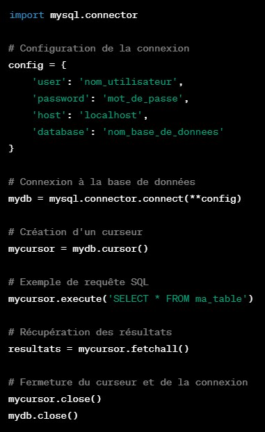
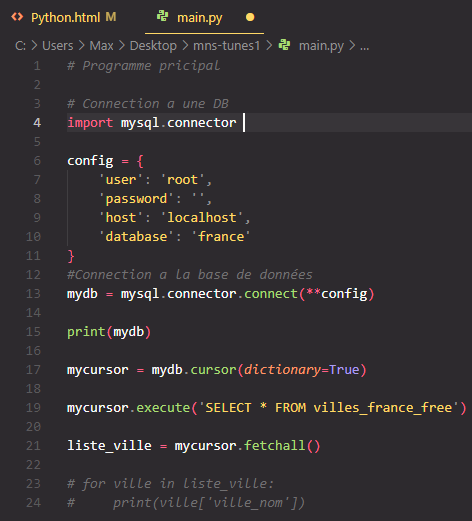

Python c'est quoi ?
Le langage Python est un langage de programmation populaire et polyvalent. Voici quelques points simples pour
expliquer ce qu'est le langage Python :
- Facilité de Lecture et d'Écriture : Python est conçu pour être facile à lire et à écrire. Sa syntaxe est
claire et ressemble presque à l'anglais, ce qui facilite la compréhension même pour les débutants en
programmation.
- Interprété : Python est un langage interprété, ce qui signifie que le code source est exécuté ligne par
ligne par un interpréteur Python, sans nécessité de compilation préalable. Cela simplifie le processus
de
développement et de test.
- Polyvalent : Python est utilisé dans de nombreux domaines tels que le développement web, la science des
données, l'intelligence artificielle, l'automatisation, les jeux vidéo, etc. Sa polyvalence en fait un
choix
populaire pour différents types de projets.
- Communauté Active : Python bénéficie d'une vaste communauté d'utilisateurs et de développeurs. Il existe
de
nombreuses bibliothèques et modules prêts à l'emploi, ce qui facilite le développement de solutions sans
avoir à réinventer la roue.
- Open Source : Python est un langage open source, ce qui signifie que son code source est accessible au
public. Cela favorise la collaboration et permet à quiconque de contribuer à son amélioration.
- Orienté Objet : Python prend en charge la programmation orientée objet, une approche de programmation
qui
organise le code autour d'objets, ce qui facilite la réutilisation du code et la gestion de la
complexité.
- Dynamiquement Typé : Python est un langage dynamiquement typé, ce qui signifie que vous n'avez pas
besoin de
déclarer explicitement le type d'une variable. Cela simplifie le processus de programmation, mais il
faut
être conscient des types lors de l'exécution du programme.
En résumé, Python est un langage de programmation accessible, polyvalent et largement utilisé dans divers
domaines en raison de sa simplicité, de sa lisibilité et de sa vaste communauté de développeurs.
Syntaxe et commandes :
-
if Signifie "SI"
Premer ordre de priorité dans une declaration "if-elif-else".
Exemple :
score = 75
if score >= 90:
print("A")
elif score >= 80:
print("B")
elif score >= 70:
print("C")
else:
print("C")
-
else Signifie "AUTRE"
Exemple :
score = 75
if score >= 90:
print("A")
elif score >= 80:
print("B")
elif score >= 70:
print("C")
else:
print("C")
Code a executer si aucune autres condition n'est vraie.
Dernier ordre de priorité dans une declaration "if-elif-else."
-
in Signifie "PRESENCE"
Exemple :
nombre_de_doight = int(input)
if nombre_de_doight in(5)
print("C'est le nombre total de doight pour une seul main")
-
% Cela donne le reste de la division.
Exemple :
Reste = 7%3
print(Reste) = 1
Explications : 7 / 3 = 2,33 donc le quotient est de 2, le reste est de 1.
-
== Cela symbolise une égalité.
Exemple :
reste = total_doight % 2
if reste == 0:
print("Nombre paire")
-
elif Signifie "sinon si" 2ème ordre de prioriter dans les declaration
"if-elif-else"
Exemple :
score = 75
if score >= 90:
print("A")
elif score >= 80:
print("B")
elif score >= 70:
print("C")
else:
print("C")
-
str()
En Python, str() est une fonction intégrée qui convertit son argument en une représentation sous forme de
chaîne de caractères (string). Cela signifie que si vous avez une valeur d'un autre type de données
(comme
un entier, un flottant, un booléen, etc.), vous pouvez utiliser la fonction str() pour la convertir en
une
chaîne de
for Signifie "Pour"
En Python, une boucle for est utilisée pour itérer sur une séquence (comme une liste, une chaîne de
caractères, un tuple, un dictionnaire, etc.) ou sur d'autres objets itérables. La syntaxe de base d'une
boucle for est la suivante :
for variable in sequence:
# Bloc de code à exécuter à chaque itération
# Utilisez la variable pour accéder à l'élément courant de la séquence
while Signifie "tant que"
En Python, la boucle while est utilisée pour exécuter un bloc de code tant qu'une condition spécifiée
reste
vraie. La syntaxe de base d'une boucle while est la suivante :
while condition:
# Bloc de code à exécuter tant que la condition est vraie
Exemple avec une boucle while:
compteur = 0
while compteur < 5:
print(compteur) compteur +=1
Connection d'une base de données avec Python
Tout d'abord il va nous faloir le module "mysql.connector" sur VS.code
Pour ce faire nous allons devoir mettre a jour le "pip" avec la commande: python -m
pip
install
--upgrade
pip. Une
fois la MàJ finit nous entrons la commande d'installation: pip install
mysql-connector-python
C'est bien beau tout ca Max mais ca veut dire quoi "Pip" ?
"Pip" est un gestionnaire de paquets pour Python. Il est utilisé pour installer et gérer des bibliothèques,
des
modules et des packages Python. Le nom "pip" est un récursif acronyme pour "Pip Installs Packages" ou, de
manière plus formelle, "Pip Installs Python". Il simplifie le processus d'installation, de mise à jour et de
gestion des dépendances pour les projets Python.
Exemple simple d'utilisation de mysql.connector pour se connecter à une base de données MySQL et éxécuter
une
requête:

Exemple vu en cour de connnection a une Base de données:

import mysql.connector est un module Python qui fournit une interface pour
interagir avec des bases de données MySQL à partir de programmes Python. Il permet à votre code Python
d'établir des connexions avec une base de données MySQL, d'exécuter des requêtes SQL et de manipuler les
résultats.
mycursor est un objet de curseur dans la bibliothèque mysql.connector. Un
curseur est essentiel lors de l'interaction avec une base de données, car il permet d'exécuter des
requêtes
SQL et de récupérer les résultats.
- Création du curseur :
mycursor = mydb.cursor(dictionary=True)
Ici, mydb.cursor() crée un objet de curseur à partir de la connexion à la base de données (mydb). Le
paramètre dictionary=True indique que le curseur doit retourner les résultats sous forme de
dictionnaires. Cela signifie que les résultats de chaque ligne seront stockés dans un dictionnaire
où
les noms de colonnes servent de clés.
- Exécution de requêtes SQL :
mycursor.execute('SELECT * FROM villes_france_free')
Après la création du curseur, on peut utiliser ce curseur (mycursor) pour exécuter des requêtes SQL.
Dans
votre code, une requête de sélection est exécutée pour récupérer toutes les lignes de la table
'villes_france_free'.
- Récupération des résultats :
liste_ville = mycursor.fetchall()
Une fois la requête exécutée, les résultats peuvent être récupérés à l'aide de méthodes telles que
fetchone() pour une seule ligne ou fetchall() pour toutes les lignes. Dans votre code, fetchall()
est
utilisé pour récupérer toutes les lignes résultantes de la requête SQL.
En résumé, le mycursor est un objet qui agit comme une interface pour exécuter des requêtes SQL et
récupérer les résultats à partir de la base de données. Il facilite l'interaction entre votre
programme
Python et la base de données MySQL.